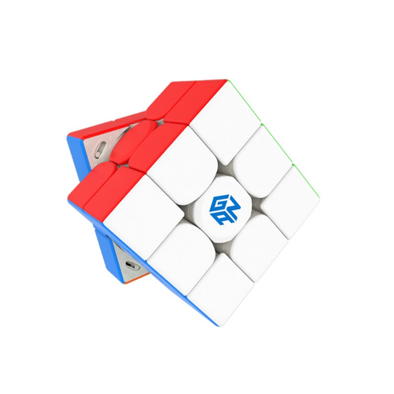

My Favourite Hobby
My hobby is cubing. I like cubing because at first it is very difficult but when I started doing it very much ,it became very easy. My best time to solve a cube is 31 seconds. I wanted to learn this hobby because 7 years ago, my Grandfather bought me my first Rubik's cube. After I got it I scrambled it and thought I could solve it but I couldn't solve it so it was there in the cupboard for 7 years. One day my Grandmother took it out so I thought I would solve it now but it was very difficult. But one morning I turned the cube randomly and made the white cross and after that I watched a tutorial and solved it. Everyone should try to learn how to solve a cube because it is a very good mind exercise. Now I can solve cubes like a 7x7.